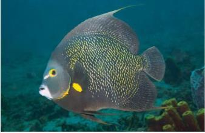
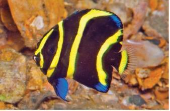
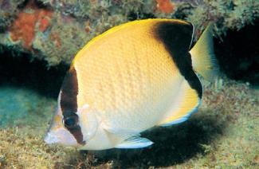
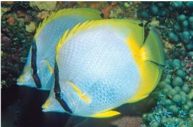
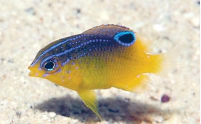
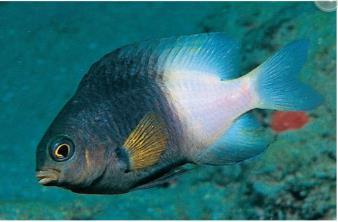
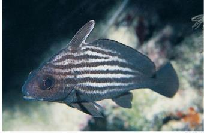
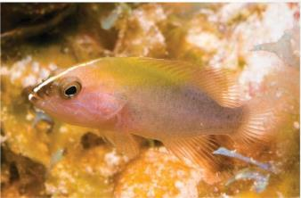
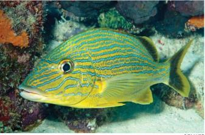

ACR Fish Identification Quiz
Select settings from the left then begin

Blue Angelfish
option1
option2
option3
option4

Blue Angelfish
Holacanthus bermudensis juvenileDarkblue with three blue to white body bars. Middle body babr is straight.
Yellow Lips, yellow area from around pectoral to ventral fins; tellow tail.

French Angelfish
Pomacanthus paruBring Yellow ring around eye. Tail Rounded
All fins black except pectoral which is yellow

French Angelfish
Pomacanthus paru juvenileRounded Tail with yellow border forming an oval. Black body with three yellow body bars.
Yellow band extends down forehead stopping at the base of the upper lip, splits and goes around mouth

Grey Angelfish
Pomacanthus arcuatusGrey Body, Yellow inner face of pectoral fin
Square-cut tail

Grey Angelfish
Pomacanthus arcuatus juvenileBlack body with threee yellow body bars and one on the foredail
Yellow band extends down from forehead to and around lips. Square cut tail with qhite to transparent margin

Queen Angelfish
Holacanthus ciliaris1. Dark Blue spot on forehead, specked and ringed with briliant blue.
2. Tail yellow. Blue to greenish blue body with yellow rims on scales.

Queen Angelfish
Holacanthus ciliaris juvenileDarak blue boddy with three brilliant blue to white body bars
Second body bar curved

Rock Beauty
Holacanthus tricolorYellow to yellow-orange forebody and tail
Mid and rear body black

Rock Beauty
Holacanthus tricolor juvenileyellow body with a black spot ringed in brillian blue on rear body
(juvenile)

Foureyed Butterflyfish
Chaetodon capistratusBlack spot ringed in white on rear body near upper base of tail.
Black baron head across eye

Reef Butterflyfish
Chaetodon sedentariusYellowish back and dorsal fin, silver white lower body. Black bar on head runs across eye
Broad black bar line area on rear body, including rear portions of dorsal and anal fins.

Spotfin Butterflyfish
Chaetodon ocellatusSilver-white body with black bar on head and runs across eye.
Fins (except pectoral) bright yellow; tail fin translucent on juveniles. Black dot on outer edge of rear dorsal fin.

Banded Butterflyfish
Chaetodon striatusStriking in its contrasting beauty, it has a deep, thin, somewhat disc-shaped body, with a concave forehead and short snout. The coloration of juveniles and adults can be quite different. Juveniles have large, ringed black spot at the base of the dorsal fin, four vertical body bars, with an overall body color of brownish-yellow instead of the white that adults have as a base.

Beaugregory
Stegastes leucostictusDusky grey to blueish body with areas of yellow, especially on tail, rear dorsal and anal fins.
Series of blue dots on head and gill cover continue as vague horizontal lines on upper body. Rarely have black spot on tail base.

Beaugregory
Stegastes leucostictus juvenileBlack spot ringed in blue on dorsal fin.
Blue wash extending from upper head over dorsal fin and back

Bicolor Damselfish
Stegastes partitusBlack and white.
Forebody is usually black however the boundary between ark and pale areas can vary greatly

Blue Chromis
Chromis cyaneaBrilliant blue, often dark on nape and along back
slender deeply forked tail with dark borders

Brown Chromis
Chromis multilineataBrown body, border of dorsal fin and tips of tail fin yellow.Dark spots around base of pectoral fin
Juveniles tail has black borders and white spots on base of dorsal fin

Cocoa Damselfish
Stegastes variabilisUsually have a dark spot on tail base
Lack of spot causes confusion with Beaugregory

Cocoa Damselfish
Stegastes variabilis juvenileBlack spot ringed in blue on dorsal fin, extend slightly onto back
Blue wash extending from upper head over dorsal fin and back

Purple Reeffish
Chromis scottiSlate blue to dark blue with bright blue markings on head and back.
(Juveniles have brilliant blue with 'V' on snout)

Sergeant Major
Abudefduf saxatilisFive black body bars. Upper lip does not overhand lower. Upper body usually Yellow with shades of green and blue.
Male becomes dark blue to purple durign mating season

Threespot Damselfish
Stegastes planifronsBody varies from yellow to tan & grey, darkening with age.
Dark spot on base of pectoral fin. Lack saddle on upper base of tail.

Threespot Damselfish
Stegastes planifrons juvenilehas large second spot on back and base of dorsal fin
(disapears on maturity)

Yellowtail Damselfish
Chrysiptera parasemaDark Body occasionally changing to ywllo or yellow-orange
Yellow tail (starts as translucent to whitish, but changes to yellow on maturity).

Yellowtail Damselfish
Chrysiptera parasema juvenileDark Body occasionally changing to ywllo or yellow-orange
Yellow tail (starts as translucent to whitish, but changes to yellow on maturity).

Atlantic Jewel Damsel
Microspathodon chrysurusJewel Damsel Fish - Microspathodon chrysurus: As a juvenile, the Jewel Damselfish, also known as Jewelfish or Bluespot Jewelfish is black with sparkling blue dots. As the fish matures, it may turn brown to yellow and have smaller, indistinct spots.
Yellow Damselfish
Amblyglyphidodon aureusThis fish reaches 13 centimetres (5.1 in) in length. It is yellow with blue or purple spots on its face. Some individuals have dark blotches on their sides.

Sunshinefish
Chromis insolataThey are found in schools throughout the tropical Western Atlantic Ocean and are a relatively peaceful Damselfish species. The Sunshine Chromis makes a beautiful addition to any aquarists' display. They are yellow across the back, with lavender along the middle portions of the body, with a white pearly appearance along the stomach.

Highhat
Equetus acuminatusBlack and white stripped body. Elongated dorsal fin.
Similar to Spotted Drum and Jackknife fish but lacks bars on head

Jackknife Fish
Equetus lanceolatusFins with NO spots.
Single black band runs from top to front dorsal fin to and along midbody to the tip of the tail.

Spotted Drumfish
Equetus punctatusFront dorsal fin unusually long. Black and white bars on head and multiple stripes on body.
No spots on rear dorsal or tail fins

Spotted Drumfish
Equetus punctatus juvenileFront dorsal fin unusually long. Black and white bars on head and multiple stripes on body.
Rear dorsal and tail fins black with white spots
Cubbyu
Equetus umbrosusis a small fish, usually between 6 and 9 inches, that can occasionally be found on coral reefs in the middle western Atlantic
Fringed Filefish
Monacanthus ciliatusFilefish are uniquely shaped with deeply keeled bodies and prominently projecting snouts, with small pectoral fins and truncated, fan-shaped caudal fins. There is a slender, retractable spine that crowns the head, just above the posterior portion of the eye. The mouth is small and terminal, containing specialized incisors on the upper and lower jaws. In addition, the upper jaw has four teeth in an inner series and six in the outer series while in the lower jaw there are four to six in the outer series.

Planehead Filefish
Stephanolepis hispidusThe Planehead Filefish have deep laterally compressed bodies. They are a mottled pale brown, olive or green color on a light colored background with two darker brown blotches and streaks on their sides. They are covered with minute scales and their skin is rough to the touch. Their head has an elongated snout with a terminal mouth giving them a concave profile.

Whitespotted Filefish
Cantherhines macrocerusThe American whitespotted filefish typically has a brown or olive colored body, although it may also be grey. These fish can rapidly change appearance to a high contrast color pattern with a much darker background and many light colored spots

Black Grouper
Mycteroperca bonaciNormally reddish-brown to black. Can pale or darken until markings are indistinct. Tin pale to yellow margin on pectoral fins.
Ends of rectangular blotches on upper body are nearly square. Tail has wide black margin, with thin white edge.

Coney
Cephalopholis fulvaIdentification by color impractical because of several color phases, has a bi-color phase.
Two black dots on lower lip (juvenile has four). Two black dots behind doorsal ffin and on base of tail (juvenile has two white dots on base of tail)

Graysby
Cephalopholis cruentataLight reddish brown to gray body with darker orangish brown spots over body.
Three to ive pale or dark spots along base of dorsal fin. Tail more rounded than similar groupers/seabass.

Graysby
Cephalopholis cruentata juvenileLight reddish brown to gray body: may have a yellowish wash over head and back.
Three to five pare or darkspots along base of dorsal fin. White band runs from nape between eyes to lower lip.

Rock Hind
Epinephelus adscensionisBlack saddle spot on base of tail. Reddish to dark dots cover the body and all fins. One to four pale or dark blotches along back below dorsal fin.
May have additional thin strips on body. Fins are pale. Black spot on base of tail (not always present)

Scamp Grouper
Mycteroperca phenaxLight tan to brown but can darken quickly. Dark body spots tend to form broken stripes and rectangullar splotches.
Dusky tail has pale margin.

Bluestripe Grunt
Haemulon sciurusDark tail and rear dorsal fin with light margins: other fins yellow.
Blue stripes over yellow-gold body.

French Grunt
Haemulon flavolineatumYellow stripes on a white to bluish or yellowish silver background.
Yellow stripes below lateral line set on diagonal.